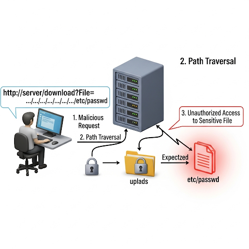

Path traversal, also known as directory traversal, is a security
vulnerability that allows an attacker to access files and directories
stored outside the web root folder. It occurs when user-supplied input
is not properly sanitized or validated before being used to construct a
file path. An attacker can use special characters like
../ to navigate up the directory tree and access sensitive
files, such as configuration files, source code, or password files.
A path traversal attack exploits the trust a server places in user input. For example, a vulnerable Node.js endpoint might serve static files based on a query parameter.
const express = require('express'); const app = express(); const path = require('path'); app.get('/download', (req, res) => { const fileName = req.query.file; const filePath = path.join(__dirname, 'uploads', fileName); res.sendFile(filePath); }); app.listen(3000);
In this example, an attacker could make a request like
http://localhost:3000/download?file=../../../../etc/passwd.
The path.join() method resolves this to a path like
/path/to/your/app/uploads/../../../../etc/passwd. The
operating system then resolves the ../ sequences, allowing
the server to send the /etc/passwd file, which contains a
list of system users.
To prevent path traversal vulnerabilities in Node.js, you should never trust user input when constructing file paths. Here are the most effective mitigation strategies:
Input Validation and Sanitization: This is the
primary defense. Validate the user input against a whitelist of
allowed file names or types. You can also strip out or reject any
input containing directory traversal sequences like
../ or ..\\.
Using path.basename(): This method
returns the last portion of a path, effectively stripping any
directory information. It's a simple but effective way to prevent
traversal.
const express = require('express'); const app = express(); const path = require('path'); app.get('/download', (req, res) => { const fileName = path.basename(req.query.file); const filePath = path.join(__dirname, 'uploads', fileName); res.sendFile(filePath); }); app.listen(3000);
In this corrected code, if an attacker provides
../../../../etc/passwd, path.basename() will
only extract passwd. The resulting file path will be
/path/to/your/app/uploads/passwd, which is likely a
non-existent and harmless file within the intended directory.
Chroot Jails: While more complex, you can restrict the process's access to a specific directory using a chroot jail. This creates a virtual root directory for the process, preventing it from accessing files outside that directory, even if a path traversal attack is successful. However, implementing chroot jails correctly can be challenging and is not a substitute for proper input validation.
Principle of Least Privilege: Run your Node.js application with a user account that has the minimum necessary file permissions. This limits the damage an attacker can do if they successfully access files on the system. For instance, the user account shouldn't be able to read system-wide configuration files or the application's source code.
Node.js's built-in path module provides powerful methods
for working with file and directory paths. Understanding
path.join(), path.normalize(), and
path.resolve() is crucial for building robust and secure
applications. While they all manipulate paths, they serve different
purposes.
The path.join() method combines multiple path segments into
a single, clean path string. It automatically uses the correct
platform-specific path separator (/ on macOS/Linux,
\ on Windows) and handles redundant separators and special
characters like . and ...
Syntax: path.join([...paths])
Definition: Joins all given path segments together and normalizes the resulting path. It's a fundamental tool for creating cross-platform file paths from multiple components.
const path = require('path'); const filePath = path.join('/users', 'john', 'documents', '..', 'notes.txt'); console.log(filePath); // On macOS/Linux: '/users/john/notes.txt' // On Windows: '\\users\\john\\notes.txt'
The path.normalize() method cleans up a single path string
by resolving . (current directory) and
.. (parent directory) segments and replacing multiple or
mixed separators with a single, platform-specific separator.
Syntax: path.normalize(p)
Definition: Normalizes a path string, resolving
. and .. segments and ensuring correct
separators. Unlike path.join(), it operates on a single
path string.
const path = require('path'); const normalizedPath = path.normalize('/foo/bar//baz/../asdf/./'); console.log(normalizedPath); // On macOS/Linux: '/foo/bar/asdf/' // On Windows: '\\foo\\bar\\asdf\\'
Note that path.normalize() preserves a trailing slash.
The path.resolve() method resolves a sequence of path
segments into an absolute path. It works from right to left, prepending
segments until it forms an absolute path. If no absolute path is formed
after processing all segments, it uses the current working directory as
the base.
Syntax: path.resolve([...paths])
Definition: Resolves a path or sequence of paths into
an absolute path. It's different from path.join() because
it will discard any previous path segments once it encounters an
absolute path (/ or C:).
const path = require('path'); const resolvedPath1 = path.resolve('users', 'john', 'notes.txt'); console.log(resolvedPath1); // Example output: '/Users/myproject/users/john/notes.txt' const resolvedPath2 = path.resolve('/users/john', '..', 'notes.txt'); console.log(resolvedPath2); // Example output: '/users/notes.txt'
Path traversal vulnerabilities arise when a user can provide input (like
../../) that allows them to access files outside of an
intended directory. While path.join() itself does not
prevent this, combining it with other security measures can effectively
mitigate the risk.
The core idea is to combine a trusted base directory with the user-provided input and then validate that the resulting path is still within the trusted directory.
Here's how you can use path.join() as part of a secure
approach:
Define a trusted base path: This is the directory where files are allowed to be accessed from. Never rely on user input for this part of the path.
Use path.join() to combine the base path and user
input:
path.join() will handle the ../ characters
and other irregularities, creating a sanitized and normalized path.
Validate the resulting path: The most critical step is to check if the new path still starts with the trusted base path. If it doesn't, it means a path traversal attempt was made. This check is often performed by comparing a canonicalized path.
const express = require('express'); const path = require('path'); const app = express(); const fs = require('fs'); app.get('/download', (req, res) => { const fileName = req.query.file; // 1. Define the trusted base directory. const uploadsDir = path.join(__dirname, 'uploads'); // 2. Use path.join() to create the full path. const filePath = path.join(uploadsDir, fileName); // 3. The critical validation step. // Ensure the final, resolved path still begins with the trusted base directory. if (!filePath.startsWith(uploadsDir)) { return res.status(403).send('Unauthorized access!'); } // Now it's safe to send the file. res.sendFile(filePath, (err) => { if (err) { console.error(err); res.status(404).send('File not found.'); } }); }); app.listen(3000, () => { console.log('Server listening on port 3000!'); });
This approach, which involves whitelisting a base directory and then
validating the final path, is the most robust defense against path
traversal attacks. Simply using path.join() isn't enough on
its own, as it will still process .. segments, but by using
the method to create the path and then validating the output against
your trusted directory, you can effectively prevent an attacker from
escaping the intended folder.
